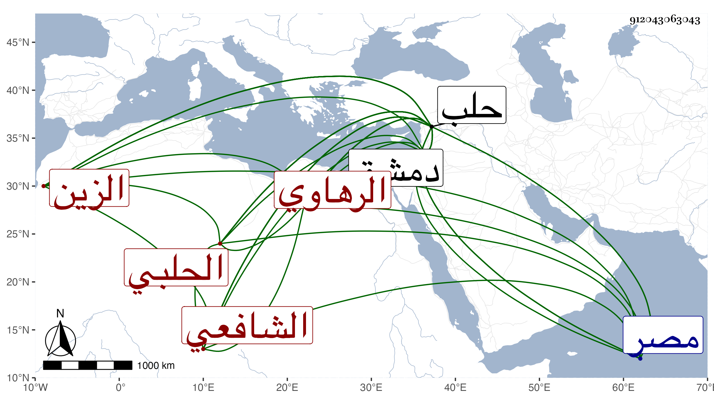

0902Sakhawi.DawLamic.ITO20230111-ara1.EIS1600.912043063043
Biography ID: 912043063043
220
عمر بن إبراهيم بن سليمان الزين الرهاوي الأصل الحلبي الشافعي ، اشتغل بدمشق على الشمس الموصلي الشافعي وبحلب علي أبي المعالي بن عشاير وبرع في الأدب والنظم والنثر وصناعة الإنشاء وكتب خطا حسنا وفي آخر عمره قرأ على العز أبي البقاء الحاضري الحنفي المغني وكتب الإنشاء بحلب ، ثم استقل بصحابة ديوان الإنشاء بها عوضا عن ناصر الدين أبي عبد الله محمد بن أبي الطيب سنين ثم ولي خطابة الجامع الأموي بحلب بعد وفاة أبي البركات الأنصاري وباشرها بنفسه ، وكان فاضلا ذا مروءة وعصبية ، ومن نظمه :
| وحائك يحكيه بدر الدجى | وجها وتحكيه القنا قدا |
| ينسج أكفانا لعشاقه | من غزل جفنيه وقد سدا |
| طاف الأمالي دون أهل الهوى | وشقة البعد لهم مدى |
| فمن رآه ظل في حيرة | إلى طريق الرشد لا يهدى |
| وكلما هم بسلوانه | من بين أيديه يرى سدا |
ومنه متشوقا من مصر إلى أهله وهم بحلب :
| يا غائبين وفي سري محلهم | دم الفؤاد بسهم البين مسفوك |
| أشتاقكم ودموع العين جارية | والقلب في ربقة الأسواق مملوك |
مات في ربيع الآخر سنة ست بحلب وصلي عليه بعد الجمعة على باب دار العدل بحضرة نائب البلد ودفن بمشهد الحسين بسفح جبل جوشن وفيه يقول الزين بن الخراط :
| في الرهاوي لي مديح | مسيرا عجز الحلاوي |
| قد أطرب السامعين طرا | وكيف لا وهو في الرهاوي |
ذكره ابن خطيب الناصرية ، وتبعه شيخنا في إنبائه .
